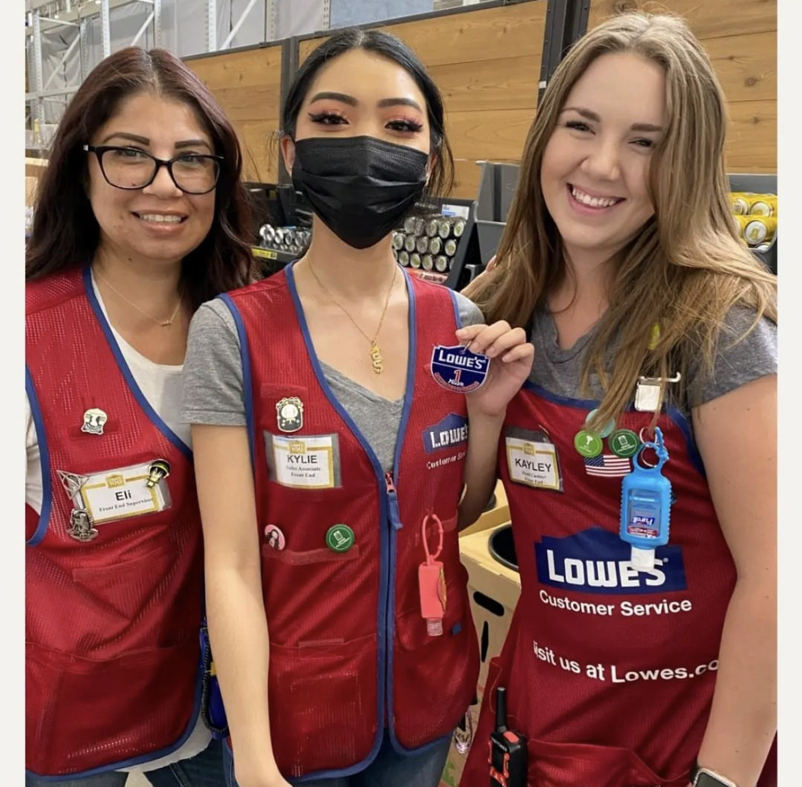
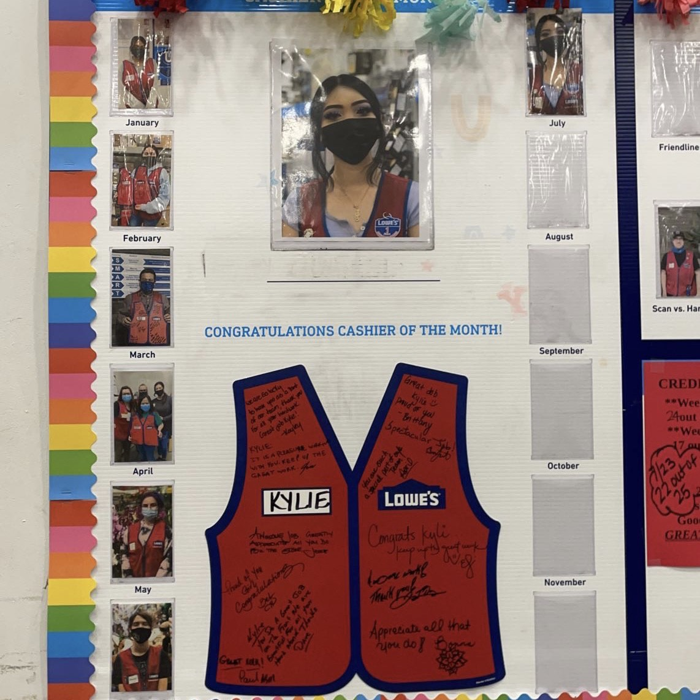
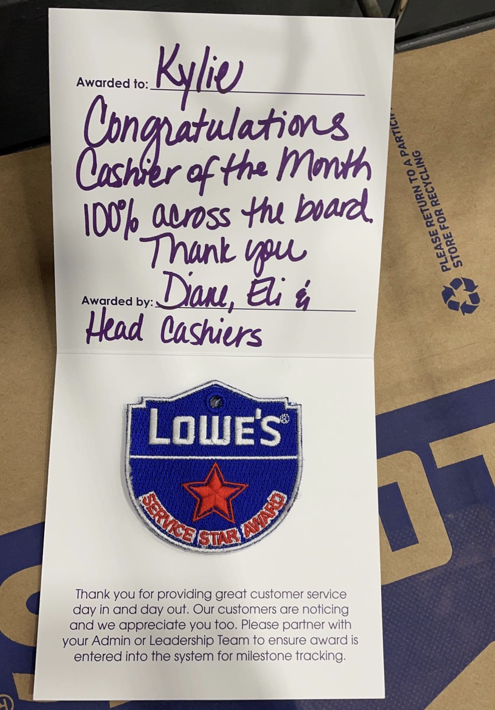
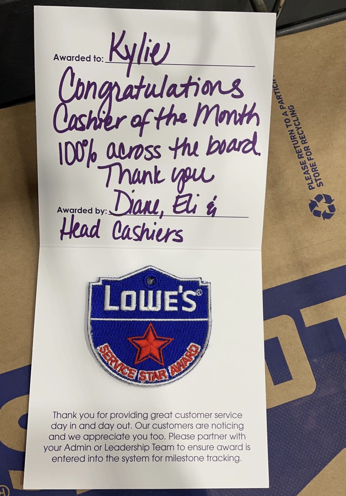
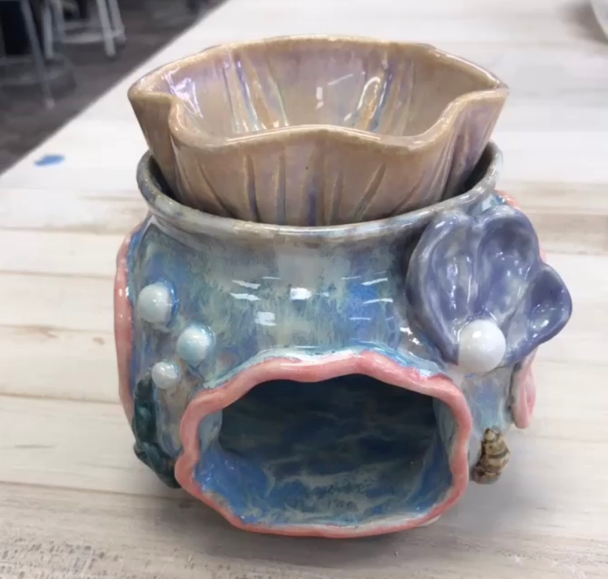
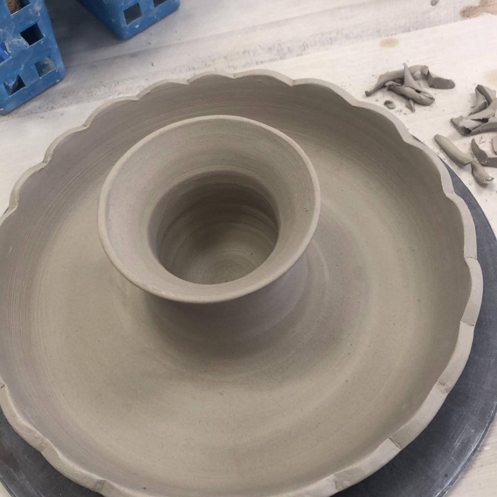
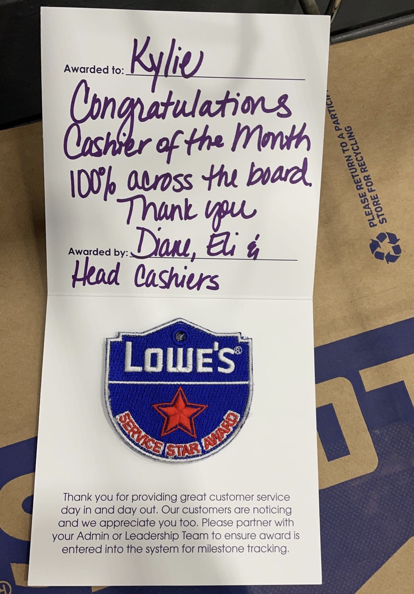
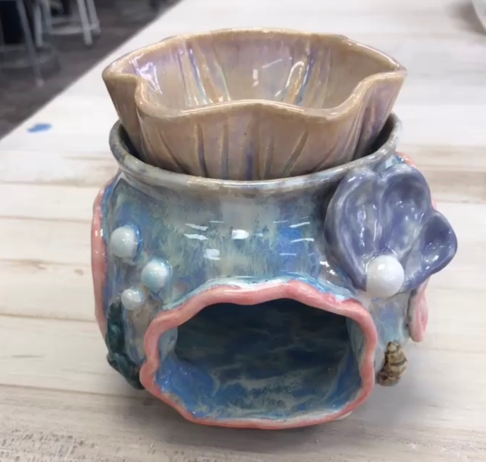
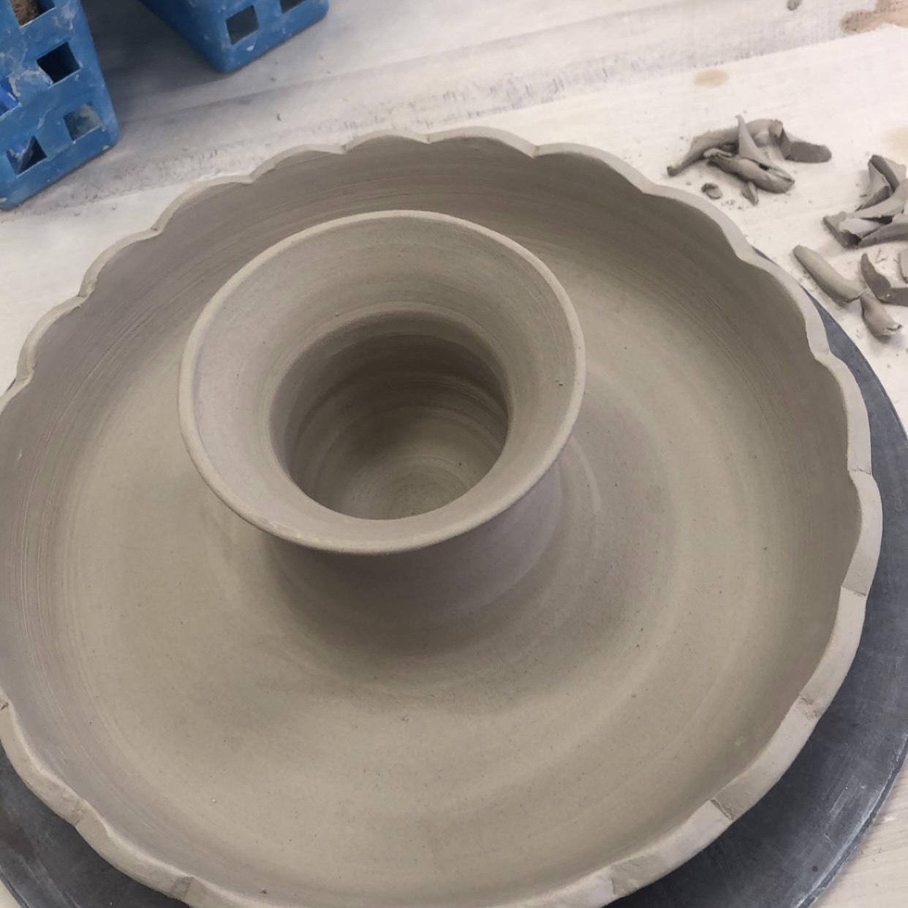

Kylie Sayavanh
University of California, Riverside | Fourth-year Undergraduate Student
B.A in Psychology
From San Diego, CA | My name is Kylie Sayavanh. I am a fourth-year undergraduate student at the Univeristy of California, Riverside.
I started going to school at UCR in the Fall of 2020. Currently, I am pursuing a B.A in Psychology. I will then expand my education further by attending graduate school after I finish my bachelors. I attended Highschool at Paloma Valley Highschool in Menifee, CA. I have done all four years of undergrad as a UCR student. Some things that I like to do when I am not on campus is attend Concerts, visit theme parks, museums, and cafes with friends. I also like to do choreography, dance, and play video games in my free time.
I often spend my leisure and recreation time at home or outside with friends. I watch movies, play video games, attend concerts, and theme parks. My most interesting hobby would have to be attending conventions such as San Diego Comic Con during the Summer. A unique skill I have is being able to draw caligraphy well. I am not an athlete, but I have been on a dance team and have taken contemporary dance classes.
Since I am graduating this spring quarter as a fourth year, I have experienced a lot of what UCR and Riverside County has had to offer. Things such as: Botanical Gardens, Boba cafes like 7Leaves and Ding Tea, and even taking a trip with my friends to downtown Riverside to see the Christmas Lights. One fond memory I have of Riverside is my first experience of going to the Riverside Food Lab after my classes. Seeing all the different food stalls and trying Monty's for the first time was a memorable experience because not only that the food was good, but it also was spent with friends that I enjoyed making memories with.
Experience
Key Club D37N Executive Assistant
• Planned local community service events
• Speaker at Divisional and Home Club Meetings
• Experience with HTML, CSS, Photoshop for Division Social Media
Front-End Cashier
• Responsible for checking out customers
• Efficiency in Kronos POS System
Teaching Assistant
• Guided students on basic clay techniques
• Reviewed and graded student ceramic projects
• Created ceramic educational examples for students to learn
• TA'd for 30 students for 2 academic semesters
Education
UC Riverside
Paloma Valley Highschool
Portfolio


 



 